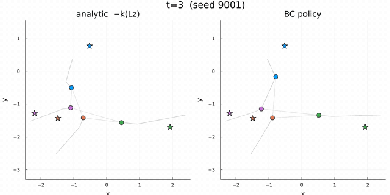
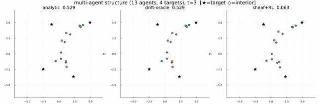

Replicating the analytic controller (simple → complex sheaf)
The learned policy first has to reproduce the analytic sheaf controller — and keep doing so as the sheaf grows richer. These two demonstrations establish that the $(A,B)$-free policy form $u=\pi_\theta(x_i,b^\star_i)$ is expressive enough to represent the analytic law, first on the simplest single-integrator sheaf and then on a large, heterogeneous multi-agent structure.
Demonstration 1: the policy reproduces the analytic controller
Dynamics. Each agent is a planar single integrator, $\dot q_i = u_i$ (control = velocity), $q_i\in\mathbb R^{2}$ — a known, linear, fully-actuated plant with no disturbance.
Sheaf structure. Vertex stalks $\mathcal F(i)=\mathbb R^{2}$. Two edge families: consensus (agent–agent) with identity restriction maps $I_2$ (neighbours must agree on their full position), and tracking (agent–target pinning) with restriction maps $\sqrt{w}\,I_2$ (an agent is pulled toward its assigned target with weight $w$). The harmonic extension $q^\star$ balances full-position consensus against the pinning.
What this tests. Whether the policy form $u=\pi_\theta(x_i,b^\star_i)$ can reproduce the analytic feedback law from local information. Behaviour-cloning — supervised regression of the policy network onto the analytic law's control outputs over sampled states — matches it to within 0.2$\%$ mean tracking error, confirming $b^\star_i$ is a sufficient observation and the $(A,B)$-free form suffices.

Demonstration 4: a heterogeneous multi-agent structure
Dynamics. Single integrators in $\mathbb R^{3}$ on a larger, heterogeneous instance: 13 agents and 4 targets, with a fixed consensus graph (18 edges) and a pinning structure (8 agent–target edges). Each target traces a three-dimensional figure-eight (a Lissajous curve, $x\sim\sin\omega t$, $y\sim\sin 2\omega t$, with $z$ a quarter-period out of phase for genuine depth), large in amplitude and fast relative to the control gain — which is precisely why the low-gain analytic feedback visibly lags below.
Sheaf structure. Stalks $\mathbb R^{3}$; identity consensus maps and $\sqrt{w}\,I$ pinning. The defining feature is heterogeneity of role: only some agents are pinned to a target, while five agents are unpinned interior nodes that carry no tracking edge and are anchored to a target only through the consensus graph. The harmonic extension must therefore propagate target information across the sheaf — a pinned agent's $b^\star_i$ comes from its target, while an unpinned agent's reference is the consensus-balanced position its neighbours imply, determined entirely by the topology. This is where the sheaf, rather than per-agent tracking, does the coordination.
Result (no drift). The learned policy tracks the whole pinned/interior structure tightly — sheaf+RL 0.06 vs analytic 0.53. At this gain the analytic feedback lags the fast, large-amplitude targets; the residual supplies the authority to track them, while the unpinned interior agents stay coordinated entirely through the sheaf.

Reading the animation. Black stars ($\star$) are targets; a coloured circle is an agent pinned to the target of that colour; a grey diamond ($\Diamond$) is an unpinned interior agent, positioned only through the consensus graph; grey lines are consensus edges. The three panels are the analytic law, the drift-oracle, and the learned policy on the same scenario — with no drift the analytic and drift-oracle panels coincide (there is nothing to cancel).